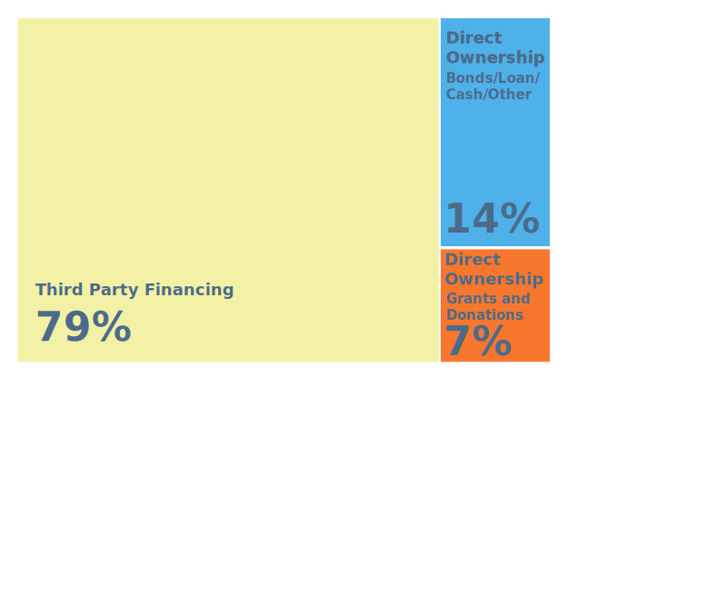

Get solar on your school
How Schools Are Paying to Go Solar
Going solar doesn't have to be hard. Learn how you can flip the switch and help build a brighter future.
How Schools Are Paying to Go Solar
Going solar doesn't have to be hard. Learn how you can flip the switch and help build a brighter future.
More than three-quarters of the cumulative solar capacity installed on schools nationwide was funded through a form of third-party ownership.
Through third-party ownership, a third party finances, builds, owns, and maintains the solar system. These arrangements are typically structured as power purchasing agreements (PPA). In a PPA, the school agrees to pay the solar company an agreed-upon rate for the solar power generated by the system that is typically below the market rate. The agreement can include options for the school to buy the panels at certain points during the contract term or after it ends. PPA arrangements enable the host school to avoid many of the traditional barriers to the installation of on-site solar systems: high upfront capital costs, system performance risk, and complex design and permitting processes.
Why PPAs are a great option for schools:
- Schools lack tax liability, so are unable to take advantage of state or federal tax credits or accelerated depreciation for solar equipment. However, through PPAs the third party owner can generate tax savings and pass some of them on to the school.
- Schools can have solar systems with little to no upfront costs.
- The host school avoids many traditional barriers to on-site installation: high upfront capital costs, system performance risk, and complex design and permitting processes.
- Solar PPAs can be cash flow positive for the school from the day the system is commisioned.
Over 2/3 of solar installed on schools was financed by a third party. The remaining portion was directly financed.
While small demonstration systems are mostly funded by grants and donations, for solar energy systems over 15 kW, third-party ownership becomes the primary funding mechanism and its utilization increases with the size of the solar energy system.
The states that allow third-party ownership account for 91% of the solar installed at schools nationwide. That means the remaining 22 states only account for 9% of the solar installed on schools.
5,346,186 students attend a solar school and there are 2,231 school districts with solar systems.
What to do if your state doesn't allow third-party (link policy guide)
Success Story in Tucson, Arizona
The solar project at the Tucson Unified School District (TUSD) delivers solar energy to 80 schools and reduces carbon dioxide emissions by 38.7 million pounds per year. TUSD paid nothing upfront for the system (financed entirely by third-party power purchase agreements), and it projects energy cost savings of up to $43 million over 20 years.Are you ready to get started and see these benefits?
Here's our how-to-guide!